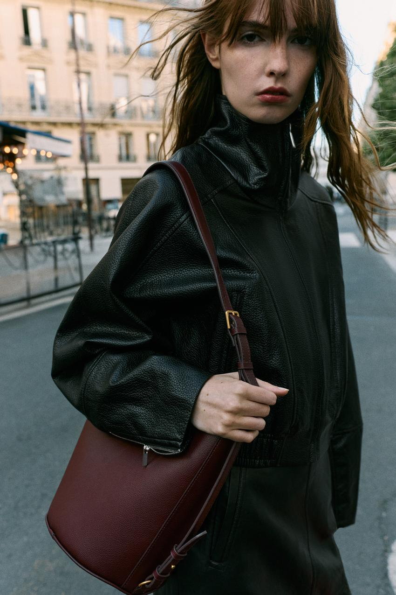
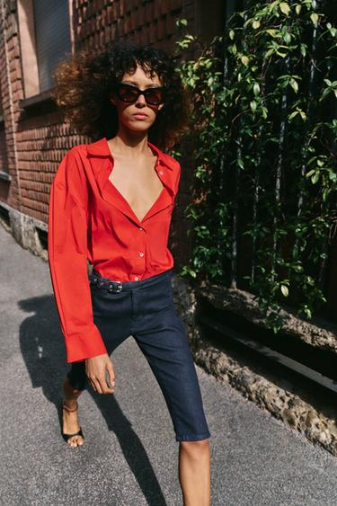
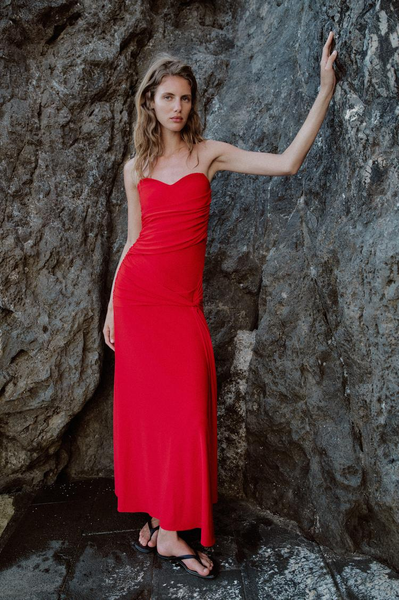
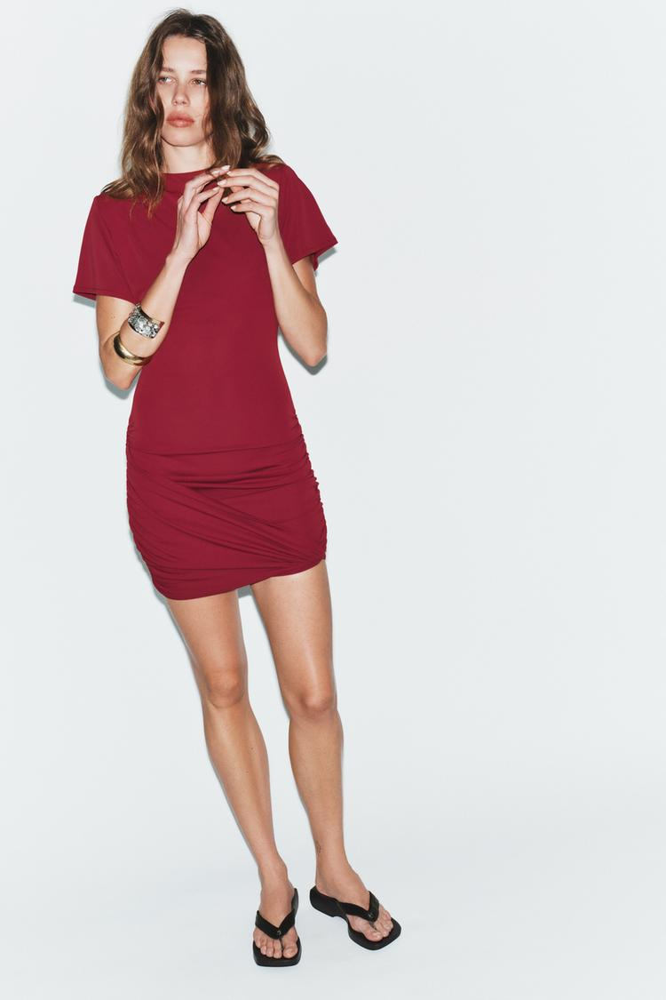

同样是红色，一只酒红手袋可以融入深色日常装，一件红色流苏外套却可能成为整张时装照片的中心。差别不只在颜色名称：红色有多明亮，占据多大面积，落在什么位置，又形成怎样的轮廓，都会改变一套衣服给人的印象。
以 ZARA 的商品造型和广告画面为例，可以把这种差别拆开来看。这里讨论的是可以观察、比较的视觉关系；“热烈”“沉稳”“轻快”等词用于描述造型感受，不代表穿着者的性格，也不意味着一种颜色能让所有人产生同样的情绪。

图 1：ZARA 酒红色水桶包造型。包身与黑色外套形成颜色区别，同时保留深色的整体基调。图片来源：ZARA 官方商品页。²
先看三个具体的对比
先看一只酒红色水桶包。它与黑色外套同处深色范围，颜色不同，却没有跳出整套衣服的明暗基调。再看深色牛仔外套里露出的红色内搭：红色只在领口和下摆出现，面积有限，位置却把上身的几个部分联系起来。最后是一件红色装饰外套：红色覆盖肩部和手臂，花朵、绳结与流苏让它向身体之外展开，视觉分量明显增加。
这三个案例分别强调了色调、位置和形状，也说明不能把“红色”当成一个独立起作用的开关。一只深红包并不天然低调，一件红色外套也不必然压迫；周围的衣服、环境和拍摄方式，都参与决定它最终显得多么突出。
色彩研究可以提供背景，但不能替代这种具体分析。Jonauskaite 与 Mohr 在 2025 年发表于 Psychonomic Bulletin & Review 的系统综述，汇总了 132 篇论文，涉及 64 个国家的 42,266 名参与者。研究发现，红色常与较强的唤醒和力量联想相关，也同时联系着积极与消极情绪。作者强调，多数研究考察的是抽象联想，尚不能直接推及实际情绪及具体场景。因此，“红色容易让人联想到力量”与“穿红色就能提升自信”是两种不同强度的判断。¹
红色的色调：不能只用一个名字判断
日常说的“色调”，往往把几个变量放在一起：偏橙还是偏紫，是色相上的差别；深还是浅，是明度上的差别；鲜明还是灰浊，则涉及彩度。理解红色，最好先把这几个问题分开。
例如，一件深酒红外套可能颜色浓郁，却因为整体较暗，在黑色衣服旁边不很突出；一件浅珊瑚红上衣也可能因为面积大、背景暗而十分醒目。“颜色深”不等于“颜色灰”，“颜色暖”也不等于“给人的性格印象更亲切”。
下面六种名称用于帮助比较，不是统一色卡。不同品牌对樱桃红、酒红或砖红的命名可以重叠，同名商品也未必是同一种颜色。选衣服时，实际面料及它与周围颜色的关系，比名字更有用。
正红：轮廓清楚时，更容易形成鲜明的色块
通常所说的正红，指没有明显向橙色或紫色偏移的鲜明红色。在灰、黑、白或低彩度衣服之间，它容易形成明确的颜色区别，因此适合用来建立视觉重点。
但“重点”有不同的做法。一件红色上衣配浅色长裤，上身会成为清楚的色块，整体仍然可以明快；同一件上衣换成黑色下装，明暗与色彩的分界更集中，效果可能更有戏剧性。差别不仅是红色本身，还在于浅色下装与深色下装组织了不同的对比。
正红也不专属于正式或性感的造型。棉质 T 恤、运动外套、蓬松针织和缎面长裙，即使用接近的红色，仍会保留各自的品类联想。若忽略服装种类，只把它们都归为“强势”，反而看不出衣服之间真正的区别。

图 2：ZARA 红色宽松衬衫。敞开的领口、较宽的袖子与深色中裤共同形成造型；红色鲜明，但效果不能只归结为“强势”。图片来源：ZARA 官方商品页。⁵
樱桃红：先确认它究竟偏深还是偏紫
樱桃红常用来形容较浓郁、略偏冷的红色，但实际商品有的明亮，有的已经接近酒红。因此，与其说它必然处在“热烈与克制之间”，不如先观察它和正红相比究竟改变了什么。
如果只是略偏紫，颜色仍然明亮，它可能依旧非常突出；如果同时压低了明度，配深色衣服时就更容易相接。所谓“更内敛”，往往来自后一个关系，并不是“樱桃”这个名字自动带来的效果。
同理，樱桃红也不是适合所有肤色的保险答案。颜色是否让面部显得清楚、是否与妆发协调，需要看实物靠近脸部的结果。脱离面料、光线和个人偏好，无法给出一套普遍适配表。
番茄红：偏橙的红，怎样与其他暖色相接
番茄红通常指带橙色倾向的红。它与米色、驼色、棕色等放在一起时，可以形成比较连续的暖色关系；搭配蓝色牛仔，又能出现更明确的冷暖区别。
这种红色常被形容为活泼或温暖，可以作为造型判断的起点。但“看起来偏暖”与“佩戴者更亲和”并不是同一件事。一件肩线挺直、领口紧闭的番茄红外套，仍可能显得严整；一件偏冷的红色宽松针织，也可以显得轻松。
搭配时可以先决定希望颜色相接还是彼此区分。希望整体柔和，就让红色与周围颜色的明暗、浓淡更接近；希望突出红色，就增加它与相邻衣物的区别。无需先把自己的肤色归入某一种人群类型。
酒红：与深色相接，不等于没有存在感
酒红是范围较宽的深红名称，可能偏紫，也可能偏棕。它在黑色、深灰和深棕之间，往往能够保留红色区别，同时维持较连续的暗部。这是它容易进入深色穿搭的原因之一。
图中的包不是一个几乎看不见的细节。它的体积足够明确，圆弧底部与外套宽大的袖子也形成了形状上的配合。但包身较暗，贴近黑色衣服时，没有出现亮红配浅色衣服那样清楚的跳跃。细肩带又把包身与肩部连接起来，颜色和位置共同组织了这件配饰。
如果把包设想为同尺寸的鲜亮红色，重点可能更快落在包身上；如果换成米白色，明暗反差也可能使它比现在更突出。这是基于画面的假设比较，并非拍摄过的对照实验。它提示我们：深酒红在这里容易融入，不代表任何红色都比任何浅色更醒目。
还可以观察表面：包身和外套都有可见的纹理及反光，红与黑之间并非完全平涂的色块。不能从照片的质感直接判断它们都是真皮，也不能把某一种纤维成分等同于“高级”。这里能确定的，是光线让纹理与折面参与了颜色表现。
砖红与珊瑚红：两种不同方向的变化
砖红常指偏棕、带灰感的红色。它与卡其、棕色、灰米色接近时，可以形成较低的色彩反差，适合希望整套衣服颜色相接的人。若放到白色背景或冷灰衣服旁边，它的暖调仍然可能很清楚，不能说它已经“没有红色的情绪能量”。
珊瑚红一般位于粉、橙与红之间，不同商品的深浅和浓淡差异很大。较浅的珊瑚色与浅色衣服搭配，容易形成明亮、柔和的整体；浓艳的珊瑚红在深色环境里，则可能十分突出。它不必被限定为少女、某个年龄段或某一种性别的颜色。
六种红色不能排列成一条从“最外向”到“最内向”的固定顺序。更可用的判断是：这件衣服的红色比周围更亮还是更暗、更鲜明还是更灰、偏暖还是偏冷？这些关系比一串情绪标签更容易拿来比较。
面积改变分量，位置决定红色出现在哪里
把一只红色小包换成一件红色长大衣，红色在整体造型中的作用当然会变化。但日常穿搭很难精确分成“10% 是点缀、30% 是日常、60% 是宣言”。
所谓 60—30—10，可以作为分配主色、辅助色与点缀色的经验提示，不能当作已经验证的情绪阈值。一只包也没有固定的“10%”：镜头靠近包时，它在照片中占得很大；全身远景里则小得多。讨论面积，至少要说明是在看全身、上半身，还是一张经过裁切的照片。
小面积：作用不只在于少，还在于放对地方
红色围巾、鞋、腰带和包，通常不会覆盖大部分身体，但它们的位置并不等价。围巾靠近面部，腰带落在上下装的分界，鞋位于身体末端，包则可能随着背法落在胸前、腰侧或大腿附近。
因此，同样大小的一块红色，不一定只起“点睛”的作用。靠近脸部可能让观者在面部与衣领之间来回看；腰间的一条红色可能强调身体分段；一双红鞋则可能把注意力带到下半身。选配饰时，应先看希望哪一部分更突出。
图 1 的酒红包落在身体侧面，颜色沿肩带向上延伸。它没有取代外套，而是在大片黑色中建立一条可辨认的路径。如果只把它总结为“少量红色使整体更精致”，就会漏掉尺寸、位置和背法的共同作用。
小面积也不是没有场合限制。一枚红色胸针、红色运动鞋与亮红漆面手袋，所带来的品类和材质联想不同；制服、礼仪或具体工作环境的要求，也可能比颜色比例更重要。面积有限，意味着可以更局部地调整，并不意味着怎么用都合适。
一件主要单品：红色与其他衣物共同组织造型
红色出现在完整的衬衫、毛衣或裤装上时，通常已经能够形成明确的色块。此时，与它相邻的衣服会显著影响整体观感。
红色上衣配白色长裤，上身与下身之间形成清楚的颜色区别；红色上衣配深灰长裤，整体可能更集中；换成与红色明暗接近的棕色，则可能减弱分界。这里没有一种搭配天然正确，关键是希望红色独立出来，还是与周围颜色连接。
穿法也会改变面积。衬衫全部露在外面、扎进裤腰，或者敞开作外层，看到的红色并不相同。敞开后，内搭会切入红色区域；袖口卷起，肤色或内衬又会形成新的边缘。与其买衣服时只想“这是件红衬衫”，不如把几种穿法分别看一遍。
大面积：让颜色成为主体，也要给细节留位置
红色长裙、长大衣或同色套装，会使红色成为造型的主要部分。这可以是明确的审美选择，不需要先把它当成应该被降低的风险。
大面积鲜红配简单轮廓，可以把表现集中在颜色上；深红色配大幅垂褶和复杂装饰，也可能很有戏剧性。深色并不自动消除体积，浅色也不必然显得轻。轮廓、装饰密度和衣服离开身体的程度，都可能增强或削弱颜色带来的印象。
如果希望大面积红色相对安静，可以减少其他抢眼元素，让配饰、领口和鞋更简洁。如果希望它成为舞台或摄影中的主角，则可以反过来保留更强的轮廓与材质变化。这里改变的是表现方向，不是在判定哪一种更“有气场”。

图 3：ZARA 鲜红色垂褶长裙。红色沿身体纵向延伸，侧腰的褶皱和系结改变局部轮廓；灰色石壁又使裙子的色彩更容易被辨认。图片来源：ZARA 官方商品页。⁶
连续与分散：不是简单的强弱关系
一块连续的红色容易被看作一件完整单品；几处间隔的红色则可能形成呼应。前者偏向集中，后者偏向联系，但不能断言连续色块在所有情况下都更醒目。

图 4：ZARA 黑色斜挎包的商品造型。红色在领口和下摆分开出现，深色外套与包保留了画面的主要面积。图片来源：ZARA 官方商品页。³
领口的红色靠近面部，下摆的红色接近外套与裤装的分界。两处颜色相接近，使内搭即使大部分被遮住，仍能被理解为同一件衣服；深色外套则维持了上身的连续性。红色在这里既是点缀，也是层次的提示。
如果只露领口，重点可能更集中在头肩附近；如果把外套完全敞开，红色可能成为胸前的主要色块。两种穿法都合理，却完成不同的视觉组织。调整露出的部分，往往比再添加一件配饰更直接。
这张图也提醒我们区分衣服与成片：画面裁到上腿附近，红色下摆在照片中的比例，会高于全身远景里的比例。不能用这张局部照片给整套穿搭计算一个精确的红色占比。
形状与面料：红色怎样离开平面的色块
色调与面积还不足以解释衣服。红色落在笔直的肩线、贴近身体的裙身、宽松的袖子或向外伸出的流苏上，形成的是不同的边缘。
贴身与宽松：决定颜色沿着什么轮廓展开
贴身剪裁让衣服更多沿身体线条展开，腰、肩、胸背或髋部的变化更容易进入轮廓。宽松剪裁则让面料在身体外形成新的体积，观者先看到的可能是肩线、袖量和下摆，而不是身体曲线。
因此，同一种红色做成贴身长裙和宽松外套，差别不仅是面积。前者可能强调纵向线条与身体的连续，后者可能强调肩部宽度、衣身空间或衣摆摆动。领口、长度和露肤位置继续改变结果，不能只凭“贴身”就判定性感，也不能只凭“宽松”就判定随意。
例如，一件肩部明确、扣合整齐的宽松红外套，可以比一件柔软的贴身针织更严整。判断服装的语气，应看哪些边缘被收紧，哪些部分被放开，而不是先给版型贴性格标签。

图 5：ZARA 垫肩垂褶短裙。肩部与上身轮廓较明确，腰胯位置的斜褶则贴近身体；一件衣服可以同时保留结构感与贴身部分。图片来源：ZARA 官方商品页。⁷
硬挺与柔软：轮廓、垂坠与表面分别观察
面料影响形状，但材料名称不能直接替代观察。同样叫皮革，厚度、处理方式和结构不同，成衣可能挺括，也可能柔软；针织有的松软，有的紧密有支撑；聚酯纤维既可以形成哑光表面，也可以形成明显光泽。
可以分别看三个问题：衣服能否自己撑起轮廓，折线是尖锐还是圆缓，表面是均匀吸光还是出现集中高光。硬挺轮廓容易留下明确的边界，垂坠面料更容易形成向下的线条，光泽则让同一块红色出现明暗变化。三者可以出现在同一件衣服上。
光泽也不等于昂贵，哑光也不等于沉闷。一件剪裁不合身的亮面衣服可能在不希望强调的位置出现拉扯；一件哑光衣服也可能通过细密纹理和清楚的轮廓表现得很有分量。与其用颜色判断价格感，不如观察接缝、褶皱、透底和轮廓是否符合设计与穿着需要。
一个具体案例：红色流苏为什么不只是颜色更鲜艳

图 6：ZARA STUDIO 2026 秋冬女装广告画面，摄影 Steven Meisel。图片来源：ZARA 官方画面；系列与署名可见 ITX 日本发布资料。⁴
红色集中在人物上身，裤装、植物和周围环境大多较暗，墙面则偏冷灰。红色因而不只是与裤子区别，也与整张照片的背景形成了色彩关系。
更关键的是红色的边缘。肩部花朵与绳结构成重复的凸起，流苏向下延伸，左侧袖子顺着手臂垂到椅子外。红色没有被限制在一个平整的衣身轮廓里，而是散到身体周围，增加了上半身的体积与装饰密度。
此时，如果仍只用“红色占多少”来解释，会错过最有辨识度的部分。相近面积的平整红上衣，未必能产生同样的轮廓；相近的流苏装饰即使换成深灰，也仍然保留复杂边缘。颜色增强了装饰的辨认，装饰则让颜色获得更多层次，两者互相支持。
坐姿又把两部分组织起来：上身向后靠，宽裤沿腿部延伸，手臂与流苏向下垂。红色上身的繁复与深色下身的较大连续面，形成了密与疏的区别。这种区别比单独的“热烈红配冷静黑”更能解释画面为什么成立。
硬边投影、明暗变化和偏暗的周边，也参与了它的戏剧性。不能把整张广告的效果全部归给衣服的色号，更不能认为买到同样颜色，就能自动得到同样的时装形象。这些属于对成片的视觉分析，不是对幕后布光和品牌意图的确认。
用组合关系判断，避免把公式当结论
把几个变量放在一起，判断会更具体：
- 鲜明红色、完整色块、清楚轮廓：表现可能集中在颜色和外形上，其他细节越少，重点越容易集中。
- 深红色、与深色相邻、体积明确：色彩区别可以较小，但体积和轮廓仍然可以很强，图 1 就保留了可辨认的包身。
- 小块红色、不同位置重复出现：可以联系领口、腰线或身体末端，图 4 的内搭通过两处露出建立了层次。
- 红色、复杂装饰、向外展开的边缘：容易使局部更繁复，是否显得有条理，要继续看周围有没有较连续、较简洁的区域。
这些是观察方法，不是穿搭效果的保证。同一组合在不同身材、光线和背景下，仍然需要重新看实际关系。
肤色与光线：从实际试穿代替固定分组
衣服靠近脸部时，颜色确实值得与肤色、头发和妆容一起看。但“冷白皮适合正红、暖黄皮适合番茄红、中性肤色通吃”把复杂关系说得太满。肤色的深浅与偏色是不同维度，也不能用“亚洲人”概括某一种固定底色。
更可行的做法，是把两三种红色放到相近条件下比较：同一位置、相近光线，尽量保持妆容与其他衣服不变。先看自己希望强调什么，再比较结果，避免只在手机里反复问哪个色号最“显白”。
可以留意三个具体问题。第一，面部与衣领的边缘是否清楚，还是两者明暗太接近；第二，眼下、鼻翼和下颌的明暗是否仍容易辨认；第三，衣服是否比预期更抢眼，以至于先看到颜色而不是整个人。不同人可能偏好不同结果，不必把白、亮或低调当成唯一目标。
还要留意照明。店内暖灯、室内白灯与自然光可能让同一件红衣出现差别；手机自动白平衡与屏幕显示，也会继续改变照片。若用途主要是白天出门，就不应只依据试衣间暖灯下的一张照片；若为舞台或摄影选择衣服，则需要考虑实际使用的光线和背景。
不想让红色紧邻面部，也可以改变位置。把红色从围巾移到包、裤装或鞋上，保留颜色偏好，同时减少它对面部附近颜色关系的影响。这通常比给自己下“不能穿红色”的结论更灵活。
文化与场合：颜色有联想，不替人表达意图
红色的含义不是脱离环境存在的。春节、婚礼、运动、舞台与日常通勤，都可能让同一种红色进入不同的解释框架。这里应区分两件事：一个场合常见怎样的颜色联想，以及某个具体的人为什么选择它。
春节装饰经常使用红色，红衣进入这样的环境，可能让人联想到节庆参与；同一件衣服在灰色办公空间里，可能主要表现为明显的颜色对比。前者不能证明穿着者在祈求好运，后者也不能证明穿着者性格强势。
衣服本身的线索也会改变联想。礼服式长裙、棉质运动服、制服式短外套和针织开衫，即使颜色相近，仍会保留不同的穿着传统。若把“红色”直接翻译成浪漫、性感或权力，就容易忽略这些更具体的证据。
尤其不能根据红色判断一个人的情感或性意愿。个别实验中观察者的评分，不等于被观察者的真实意图，更不能成为日常评价或对待他人的依据。本文分析的对象是衣服及画面怎样组织视觉，不给穿着者作心理归类。
实际选择时，可以先了解有没有明确的着装要求，再看活动的正式程度、环境与个人目标。如果场合允许鲜明表达，大面积红色完全可以成立；如果希望注意力集中在发言内容、脸部或其他部分，则可以降低对比、改变红色位置或减少装饰。不存在一条“会议不能穿红、约会应当穿红”的通用规定。
从 ZARA 案例能读出什么，不能读出什么
ZARA 的案例值得看，在于红色进入了不同品类和呈现方式：包袋可以靠近身体侧面，内搭可以只在边缘露出，装饰外套则可以放大轮廓。同一个颜色范围，能够提供不同的使用路径。
图 1 更接近日常商品造型，通过深红与黑色的接近保留整体；图 4 用少量红色说明层次；图 6 则把颜色、装饰、身体姿态和摄影环境一起推向更鲜明的时装表达。它们并不矛盾，因为商品使用与广告形象承担的任务并不相同。
官方的 2026 秋冬 STUDIO 资料也提到，将蕾丝、亮片、刺绣与流苏等装饰同针织、衬衫和长裤结合，探索日常服装与晚装的关系。⁴ 这能够支持我们理解图 6 中“繁复装饰与常见衣物并置”的做法；至于这套做法是否提高销量、是否更受某一地区欢迎，不能由这几张图回答。
同样，没有系统比较不同地区、不同季节的完整商品目录，就不能断言品牌为了某种肤色而在亚洲多卖番茄红、在欧洲多卖正红，也不能从几件商品推导出红色将流行到哪一年。对穿搭而言，先把眼前的衣服读清楚，比为整个品牌补出一套市场策略更有帮助。
红色没有达到预期时，先检查哪些关系
第一，重点是不是太多。 红色衣服、明显首饰、复杂纹样、特别的鞋与强对比包同时出现，不一定不好，但会让注意力不断转移。如果本来希望突出外套，可以先减少另一个局部的变化，而不是立即认定“红色不适合自己”。
第二，红色有没有与环境混在一起。 红墙、红色装饰或暖色灯光，可能使红衣的颜色区别变小；白墙、灰墙或深色背景又会改变轮廓。拍照时尤其值得先看背景，不必只在衣柜里调整。
第三，轮廓和面料是否完成了想要的方向。 想要清楚的肩线，衣服却塌在肩上；想要自然垂坠，胸前却出现拉扯。这些问题即使换成黑色也可能存在，颜色只能使某些关系更容易被看见，不能替代合身与结构。
第四，是否把成片效果当成了实物承诺。 商品图中的光线、姿态、镜头距离与裁切，会改变红色在画面里的大小与浓淡。看到广告喜欢的是整套形象，购买时却只得到其中一件衣服，两者之间需要重新搭配，而不是期待颜色复制广告的全部作用。
第五，是否只有“显白”“高级”这一个标准。 红色也可以服务于活力、严整、装饰感或明确的个人偏好。先说清楚希望保留什么，才能判断某种组合是否合适；一个没有目标的“好不好看”，很容易变成对颜色的反复犹豫。
用五个问题，把观察变成选择
真正试穿时，不需要计算色彩占比，可以按顺序问五个问题。
- 希望先被看到什么？ 是面部、衣服轮廓，还是某一件配饰？先决定视觉重点，再决定红色的位置。
- 这块红色与周围有什么区别？ 看明暗、浓淡与偏色，不只看它叫酒红还是樱桃红。
- 露出多少、连续还是分散？ 试着扎衣角、敞开外套、改变包的位置，观察哪一种穿法更接近目标。
- 轮廓与表面是否支持同一方向？ 希望简洁，就检查有没有多余的装饰争抢；希望繁复，就看有没有清楚的边界与较安静的区域承接。
- 换到实际场合与光线下，还成立吗？ 看真实照明、背景和着装要求，也给自己的偏好留位置。
红色的分寸感，来自这些关系是否彼此支持。小面积不天然克制，大面积不必然张扬；酒红可以形成很强的体积，鲜红也可以只是一件日常 T 恤。把颜色放回具体的衣服、身体与环境里，判断才会比一句“红色很有力量”更可靠。
来源与图像
Jonauskaite, D. & Mohr, C.（2025）. Do we feel colours? A systematic review of 128 years of psychological research linking colours and emotions. Psychonomic Bulletin & Review, 32, 1457–1486。用于色彩与情绪联想的研究背景及其适用边界，不用于证明具体穿搭的心理效果。
ZARA 英国官网：Bucket bag with buckle detail，颜色 Burgundy Red，货号 6452/810/624；图 1 来源。
ZARA 英国官网：Vertical textured crossbody bag，货号 3517/820；图 4 来源。
ITX 日本（2026-10-23）：ZARA STUDIO 秋冬系列发布资料，用于系列方向与图 6 摄影署名。图 6 为本站已留存并核对的同系列官方画面。
ZARA 英国官网：Oversize poplin shirt，颜色 Red，货号 2620/695/600；图 2 来源。
ZARA 爱尔兰官网：Long draped dress，颜色 Bright red，货号 1165/458/632；图 3 来源。
ZARA 英国官网：Draped dress with shoulder pads，颜色 Red，货号 5039/308/600；图 5 来源。
资料核对：2026 年 10 月 31 日。图片版权归原权利人；原比例展示，用于对应案例的视觉分析。